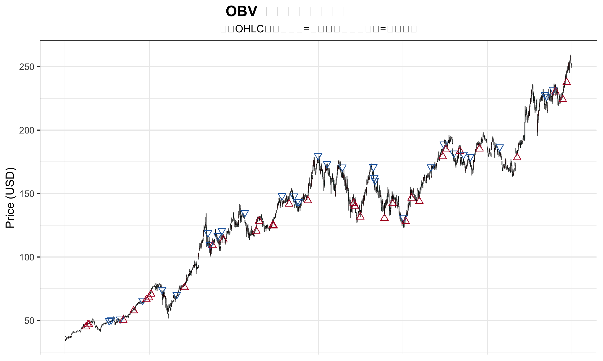
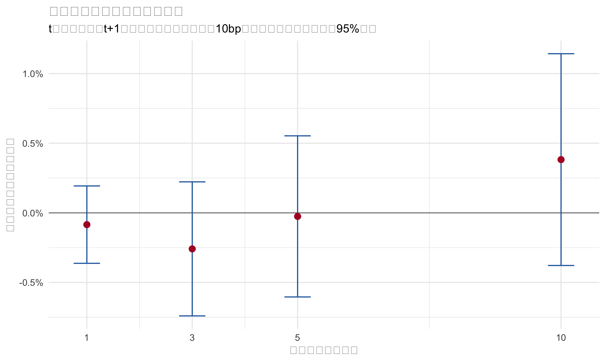

蜡烛图与成交量：OBV、CMF与VWAP
问题现场
“价涨量增”常被视为确认，但成交量同时受股票拆分、交易制度、指数调仓和市场规模变化影响。单日巨量可能是信息冲击，也可能只是收盘竞价。量价组合需要明确比较窗口和可交易时点。
学习目标
- 计算OBV、CMF、MFI与VWAP类指标；
- 区分成交量、成交额和衍生品持仓量；
- 用OBV斜率确认吞没方向；
- 检查拆股和异常量的影响；
- 评估量价确认是否提供独立信息。
经典形态与市场机制
OBV按收盘涨跌方向累计成交量；CMF根据收盘在当日高低区间的位置给成交量加权；MFI把典型价格和成交量结合；VWAP是成交量加权平均价格。日线数据只能给出按日聚合量，无法恢复真实日内订单流。期货持仓量是未平仓合约数量，与股票成交量不是同一字段，本数据不含持仓量，因此不作伪推断。
本章研究的确认假设是：看涨吞没若伴随过去10日OBV上升、看跌吞没若伴随OBV下降，方向更可信。这只是可证伪假设。
可计算定义
OBV递推为：
\[ OBV_t=OBV_{t-1}+\operatorname{sign}(C_t-C_{t-1})V_t. \]
定义10日斜率 \(\Delta OBV_{10,t}=OBV_t-OBV_{t-10}\)。只有 sign(ΔOBV) 与吞没方向一致时保留。对于拆股，本书的成交量保持原始报告值；若供应商调整成交量，应记录规则并做一致性检查。
研究设计
主实验比较所有吞没与OBV确认后的吞没。稳健性一：斜率窗口5、10、20日；稳健性二：用CMF符号替代OBV；稳健性三：对成交量取20日相对值，排除极端量日后复核。结果报告样本量、净收益和两语言指标差异。
R实现
panel <- lab_read_data()
obv_panel <- eTTR::add_obv(panel)
cmf_panel <- eTTR::add_cmf(panel, n = 20)
vwap_panel <- eTTR::add_vwap(panel, n = 10)
features <- lab_features()
engulfing <- lab_base_signals()$engulfing
signal_r <- ifelse(
engulfing != 0 & sign(features$obv_slope_10) == engulfing,
engulfing, 0
)三个指标服务于不同问题，不能因为都含成交量就相互替代。主实验只使用OBV斜率，其余用于稳健性。
Python实现
from python.candlestick_lab import load_data, pattern_signal
import numpy as np
from ettr import cmf, obv, vwap
panel = load_data()
panel = obv(panel)
panel = cmf(panel, n=20)
panel = vwap(panel)
obv_slope = panel["OBV"] - panel["OBV"].shift(10)
engulfing = pattern_signal("engulfing").to_numpy()
signal_py = np.where(
(engulfing != 0) & (np.sign(obv_slope) == engulfing),
engulfing, 0,
)日线Python vwap() 为从样本起点累计的成交量加权典型价格，与滚动10日VWAP概念不同。API名称相同不代表统计对象相同，正文必须写清窗口。
图形诊断

观察信号附近是否存在极端成交量、拆股或长时间趋势。累计OBV的绝对水平无直接跨期含义，重点是变化与背离。
证据与稳健性
| sample | events | mean_gross | mean_net | win_rate | ci_low | ci_high |
|---|---|---|---|---|---|---|
| 全部事件 | 164 | 0.0007 | -0.0003 | 0.5427 | -0.0060 | 0.0055 |
| 非重叠事件 | 143 | 0.0025 | 0.0015 | 0.5524 | -0.0043 | 0.0074 |

过滤后事件减少，但默认样本中的净优势仍可能接近零。真正的增量检验应比较条件均值差，并在相同事件可用期内评估。若OBV只是在上涨期更高，趋势控制后效果可能消失。
AI协作实验室
AI核对量价字段、拆股日和指标递推，生成“收盘不变时OBV不变”的单元测试。约束是不得把成交量解释为主动买入量。验收包括手算5日OBV、R/Python最大差、异常量日清单和窗口对齐。
失效条件与常见误区
- 把总成交量直接解释为净买入；
- 混淆日成交量、成交额与期货持仓量；
- 比较OBV绝对水平而非变化；
- 累计VWAP与滚动VWAP概念混用；
- 不控制趋势就把量价同向称为独立确认。
本章小结与练习
成交量增加了价格之外的活动强度信息，但日线量不能还原订单流方向。量价确认必须通过明确指标与增量检验成立。
- 手算一个5日OBV序列并与包输出核对。
- 比较5、10、20日OBV斜率过滤。
- 用CMF符号替代OBV，解释结果差异可能来自什么。
进入下一章前，请确认你不会把总成交量称为买方成交量，并能区分累计与滚动VWAP。